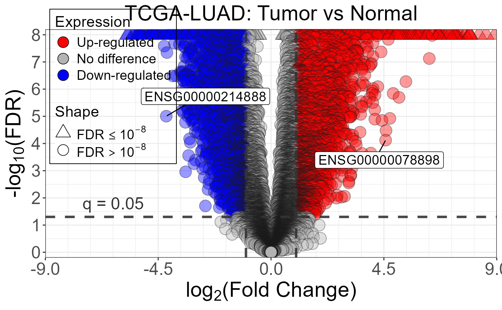

DESeq2 differential expression results for TCGA-LUAD
deseq2_results.RdDESeq2 results from a differential expression analysis
comparing primary lung adenocarcinoma tumors versus normal tissue using
TCGA-LUAD RNA-seq data. Contains 21330 genes to produce informative
visualizations with nice_Volcano(), and also suitable as input for
detect_filter(), and add_annotations()
and related plotting functions.
Format
A data frame with 21,330 rows and 7 columns:
- gene_id
Character. Ensembl gene ID (e.g.,
"ENSG00000141510").- baseMean
Numeric. Mean of normalized counts across all samples.
- log2FoldChange
Numeric. Shrunken log2 fold change (tumor vs. normal).
- lfcSE
Numeric. Standard error of the log2 fold change estimate.
- stat
Numeric. Wald test statistic.
- pvalue
Numeric. Raw p-value.
- padj
Numeric. Benjamini-Hochberg adjusted p-value (FDR).
Source
TCGA-LUAD STAR counts downloaded from the GDC Data Portal
(https://gdc-hub.s3.us-east-1.amazonaws.com/download/TCGA-LUAD.star_counts.tsv.gz).
DESeq2 analysis performed with default settings; results generated by
data-raw/deseq2_results.R.
Examples
data(deseq2_results)
# Overview
head(deseq2_results)
#> gene_id baseMean log2FoldChange lfcSE stat pvalue
#> 1 ENSG00000227051 2308.5284 -3.073156 0.1876667 -16.37561 2.856497e-60
#> 2 ENSG00000186193 281.7424 3.997131 0.2456979 16.26848 1.652038e-59
#> 3 ENSG00000118193 291.6427 4.104253 0.2611557 15.71573 1.180148e-55
#> 4 ENSG00000183856 738.1297 3.678794 0.2338524 15.73127 9.234317e-56
#> 5 ENSG00000147689 3390.9000 6.795012 0.4364517 15.56876 1.186835e-54
#> 6 ENSG00000175832 1441.8625 4.208869 0.2804773 15.00610 6.697438e-51
#> padj
#> 1 6.092908e-56
#> 2 1.761899e-55
#> 3 6.293140e-52
#> 4 6.293140e-52
#> 5 5.063038e-51
#> 6 2.380939e-47
# Significant genes
sum(deseq2_results$padj < 0.05, na.rm = TRUE)
#> [1] 10910
# Volcano plot
nice_Volcano(
results = deseq2_results,
x_var = "log2FoldChange",
y_var = "padj",
label_var = "gene_id",
title = "TCGA-LUAD: Tumor vs Normal"
)
#> Warning: Removed 1 row containing missing values or values outside the scale range
#> (`geom_point()`).
#> Warning: Removed 1 row containing missing values or values outside the scale range
#> (`geom_label_repel()`).
#> Warning: ggrepel: 273 unlabeled data points (too many overlaps). Consider increasing max.overlaps

if (FALSE) { # \dontrun{
# detect_filter (required: "ensembl" column in results)
deseq2_res <- deseq2_results
colnames(deseq2_res)[colnames(deseq2_res) == "gene_id"] <- "ensembl"
rownames(deseq2_res) <- deseq2_res$ensembl
# Get sample IDs per group from sampledata
samples_normal <- sampledata$patient_id[sampledata$sample_type == "normal"]
samples_tumor <- sampledata$patient_id[sampledata$sample_type == "tumor"]
detected <- detect_filter(
norm.counts = as.data.frame(norm_counts),
df.BvsA = deseq2_res,
samples.baseline = samples_normal,
samples.condition1 = samples_tumor,
cutoffs = c(50, 50, 0)
)
# Number of detectable genes
length(detected$DetectGenes)
# Subset results to detectable genes
head(detected$Comparison1)
} # }